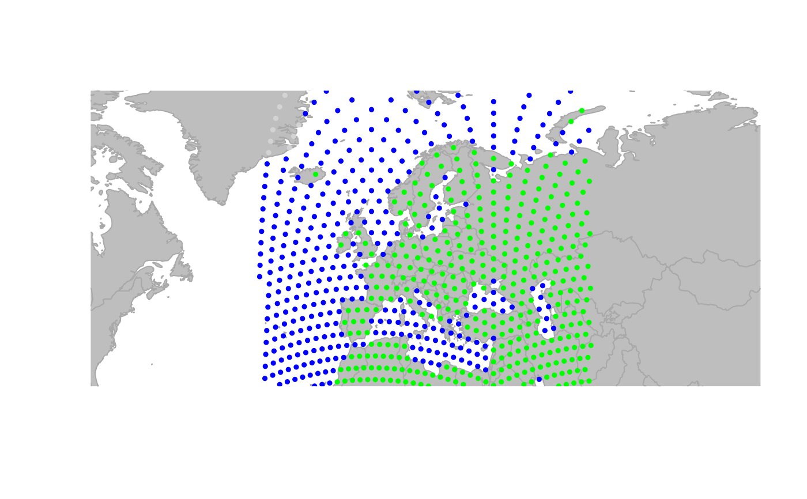
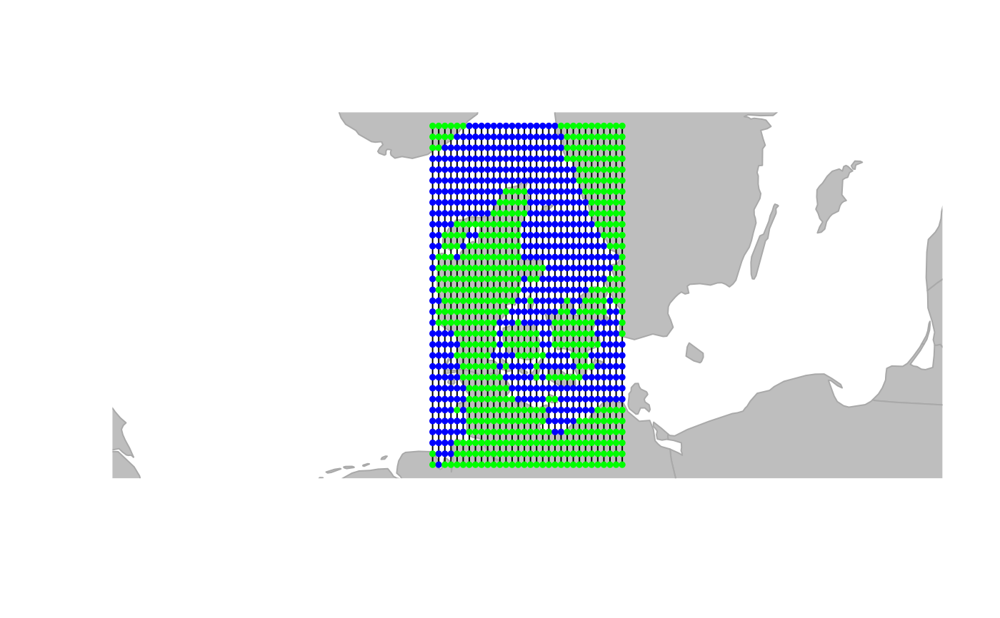

The function makeGrid builds a gGraph using a regular
grid for a given area. If no area is specified, currently plotted area is
used. Note that such grid is only valid for small scales, for cases in which
curvature of the surface of the earth can be neglected.
Arguments
- size
an integer giving the approximate number of nodes of the grid. The function will attempt to make a square grid of (approximately) this size.
- n.lon
the number of longitude coordinates of the grid (i.e., width of the grid, in number of cells)
- n.lat
the number of latitude coordinates of the grid (i.e., height of the grid, in number of cells)
- lon.range, lat.range
vectors of length two giving the range covered by the grid, in longitude and latitude, respectively.
Value
A gGraph object.
Examples
# by defining the range covered by the grid
squareGraph <- makeGrid(
size = 10000,
lon.range = c(-12, 2),
lat.range = c(49, 61)
)
squareGraph <- findLand(squareGraph)
#> although coordinates are longitude/latitude, st_intersects assumes that they
#> are planar
squareGraph <- setColors(
squareGraph,
col.rules = data.frame(
habitat = c("sea", "land"),
color = c("blue", "green")
)
)
plot(squareGraph, reset = TRUE)

# If no area is specified, currently plotted area is used
geo.zoomin(c(8, 13, 54, 58))
#> Error in h(simpleError(msg, call)): error in evaluating the argument 'x' in selecting a method for function 'plot': object 'squareGraph' not found
newGraph <- makeGrid(1e3)
newGraph <- findLand(newGraph)
#> although coordinates are longitude/latitude, st_intersects assumes that they
#> are planar
newGraph <- setColors(
newGraph,
col.rules = data.frame(
habitat = c("sea", "land"),
color = c("blue", "green")
)
)
## plot the new gGraph
plot(newGraph, reset = TRUE, edge = TRUE)
